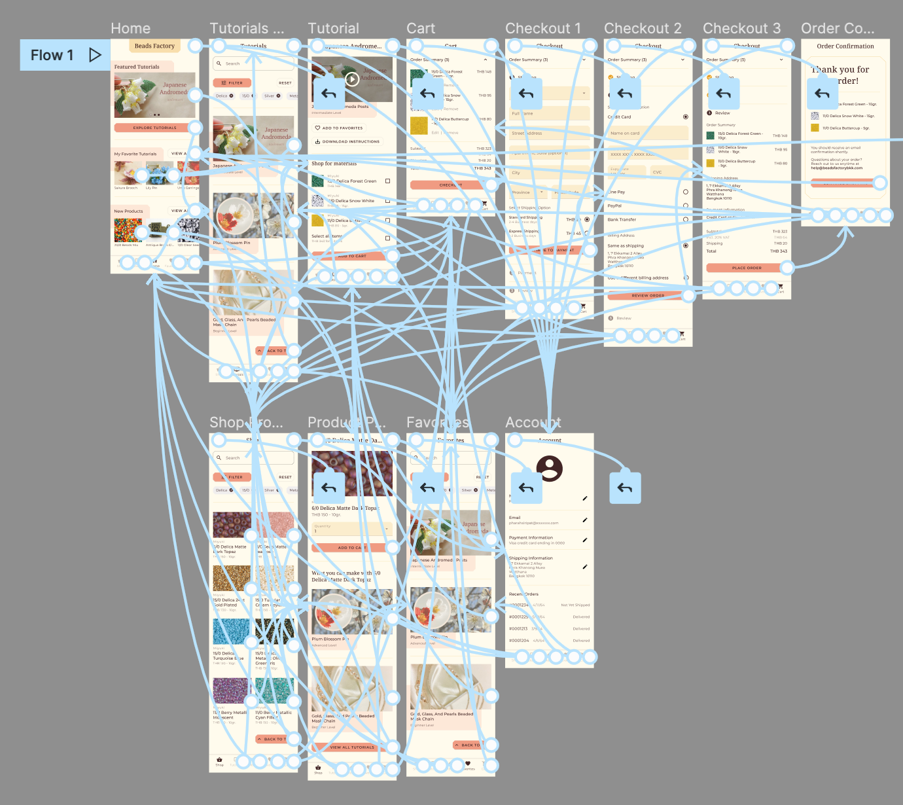

Beads Factory BKK App
Digital, UX

Project Overview
Beads Factory BKK is a local beading craft store in Bangkok, Thailand. They offer a wide range of high quality beads and beading supplies. Beads Factory BKK targets both beading hobbyists as well as makers who sell their beaded creations.
The Problem
Customers want an app experience that offers a wide range of beading products as well as tutorial videos for beading projects.
The Goal
Design an app for Beads Factory BKK that allows users to easily find the supplies they need to start their next beading project.
Duration
April - July 2021
My Role
- UX designer designing an app for Beads Factory BKK from conception to delivery
Responsibilities
- User research
- Creating low- and high-fidelity wireframes
- Creating low- and high-fidelity prototypes
- Accounting for accessibility
- Iterating on designs
User Journey Map
Mapping a user journey revealed how useful the app would be if it included an easy way to add relevant materials for a project to the user’s shopping cart.
Paper Wireframes
For the initial paper wireframes, I wanted to design a homepage that felt like a personalized, inspirational starting point for the user. The paper wireframes allowed for quick ideation and let me explore a range of layouts.
Digital Wireframes & Low-fidelity Prototypes
As I refined adapted the paper wireframes into digital wireframes, I made sure to keep my users’ needs in mind. I created a low fidelity prototype in Figma that outlines the user flow of choosing a tutorial, adding the necessary materials to the cart, and checking out.
View the Beads Factory BKK low-fidelity prototype.

High-fidelity Prototypes
The high-fidelity prototype addressed concerns relating to the process of choosing a project or product from a large list.
View the Beads Factory BKK high-fidelity prototype.

Key Mockups


Accessibility Considerations
- Be aware of color choice and contrast concerns for visibility throughout the app
- Use icons and clear imagery throughout the app to make navigation and selection easier
- Make sure all relevant information is presented in a way that is easy to view and be read by screen readers